БЛОК АВТОМАТИЧЕСКОЙ ТРАНСМИССИИ > ПОВТОРНАЯ СБОРКА |
| 1. РАСПОЛОЖЕНИЕ ПОДШИПНИКОВ |
| Метка | Внутренний/наружный диаметр переднего кольца | Внутренний/наружный диаметр упорного подшипника | Внутренний/наружный диаметр заднего кольца |
| А | 74,3-74,6 мм (2,93-2,94 дюйма) / 87,4-87,7 мм (3,44-3,45 дюйма) | 72,0-72,3 мм (2,83-2,85 дюйма) / 85,3-85,6 мм (3,36-3,37 дюйма) | - |
| B | 37,0-37,3 мм (1,46-1,47 дюйма) / 52,1-52,3 мм (2,05-2,06 дюйма) | 34,7-34,9 мм (1,366-1,374 дюйма) / 51,6-51,9 мм (2,03-2,04 дюйма) | - |
| C | - | 21,4-21,6 мм (0,841-0,850 дюйма) / 40,8-41,0 мм (1,606-1,614 дюйма) | 22,7-22,9 мм (0,892-0,902 дюйма) / 60,0-60,4 мм (2,36-2,38 дюйма) |
| D | 33,3-33,5 мм (1,31-1,32 дюйма) / 56,3-56,6 мм (2,22-2,23 дюйма) | 38,5-38,7 мм (1,515-1,524 дюйма) / 56,5-57,0 мм (2,22-2,24 дюйма) | - |
| E | - | 42,6-42,8 мм (1,68-1,69 дюйма) / 60,8-61,1 мм (2,39-2,41 дюйма) | - |
| F | 38,0-38,2 мм (1,496-1,504 дюйма) / 56,5-57,0 мм (2,22-2,24 дюйма) | 43,4-43,6 мм (1,71-1,72 дюйма) / 58,0-58,4 мм (2,28-2,30 дюйма) | - |
| G | - | 55,8-56,0 мм (2,197-2,204 дюйма) / 76,1-76,4 мм (2,996-3,008 дюйма) | 53,8-54,0 мм (2,12-2,13 дюйма) / 73,7-74,0 мм (2,90-2,91 дюйма) |
| H | 33,4-33,6 мм (1,31-1,32 дюйма) / 48,7-49,0 мм (1,92-1,93 дюйма) | 32,2-32,3 мм (1,268-1,272 дюйма) / 49,0-49,2 мм (1,93-1,94 дюйма) | 32,2-32,4 мм (1,27-1,28 дюйма) / 48,7-49,0 мм (1,92-1,93 дюйма) |
| I | - | 21,5-21,8 мм (0,846-0,858 дюйма) / 40,5-40,8 мм (1,59-1,61 дюйма) | - |
| J | - | 43,6-43,9 мм (1,72-1,73 дюйма) / 60,6-60,9 мм (2,39-2,40 дюйма) | 47,2-47,4 мм (1,86-1,87 дюйма) / 66,9-67,1 мм (2,63-2,64 дюйма) |
| 2. СКРЕПИТЕ ПОРШЕНЬ ТОРМОЗНОГО ЦИЛИНДРА № 4 И РЕАКТИВНУЮ ВТУЛКУ ТОРМОЗА |
Покройте 2 новых кольцевых уплотнения трансмиссионной жидкостью и установите их на реактивную втулку тормоза.
| *1 | Новое кольцевое уплотнение |
Покройте 2 новых кольцевых уплотнения трансмиссионной жидкостью и установите их на поршень тормозного цилиндра № 4.
Установите поршень тормозного цилиндра № 4 на реактивную втулку.
| 3. УСТАНОВИТЕ ПОРШЕНЬ ТОРМОЗНОГО ЦИЛИНДРА № 4 ВМЕСТЕ С РЕАКТИВНОЙ ВТУЛКОЙ ТОРМОЗА |
Установите поршень тормозного цилиндра № 4 вместе с реактивной втулкой тормоза в картер трансмиссии.
| 4. УСТАНОВИТЕ ПОРШЕНЬ ТОРМОЗНОГО ЦИЛИНДРА 1-Й ПЕРЕДАЧИ И ПЕРЕДАЧИ ЗАДНЕГО ХОДА |
 |
Покройте новое кольцевое уплотнение слоем трансмиссионной жидкости.
Установите кольцевое уплотнение на поршень тормозного цилиндра 1-й передачи и передачи заднего хода.
Обратив седло пружины поршня вверх (спереди), поместите поршень в картер трансмиссии.
| 5. УСТАНОВИТЕ СТЯЖНУЮ ПРУЖИНУ ТОРМОЗА 1-Й ПЕРЕДАЧИ И ПЕРЕДАЧИ ЗАДНЕГО ХОДА В СБОРЕ |
 |
Поместите стяжную пружину тормоза на поршень тормозного цилиндра 1-й передачи и передачи заднего хода.
Установите SST на держатель пружины и сожмите стяжную пружину.
С помощью SST установите пружинное стопорное кольцо.
| *1 | Пружинное стопорное кольцо |
| 6. УСТАНОВИТЕ ЗАДНЮЮ ПЛАНЕТАРНУЮ ПЕРЕДАЧУ В СБОРЕ |
| 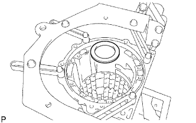 |
Установите кольцо упорного подшипника № 9.
| Параметр / Устройство | Внутри | Снаружи |
| Кольцо J | 47,2-47,4 мм (1,86-1,87 дюйма) | 66,9-67,1 мм (2,63-2,64 дюйма) |
Покройте 2 упорных игольчатых роликовых подшипника техническим вазелином и установите их в заднюю планетарную передачу.
| Параметр / Устройство | Внутри | Снаружи |
| Подшипник J | 43,6-43,9 мм (1,72-1,73 дюйма) | 60,6-60,9 мм (2,39-2,40 дюйма) |
| Подшипник I | 21,5-21,8 мм (0,846-0,858 дюйма) | 40,5-40,8 мм (1,59-1,61 дюйма) |
| *1 | Подшипник I |
| *2 | Подшипник J |
 |
Установите заднюю планетарную передачу в сборе.
| 7. ВЫБЕРИТЕ ФЛАНЕЦ ТОРМОЗА 1-Й ПЕРЕДАЧИ И ПЕРЕДАЧИ ЗАДНЕГО ХОДА |
С помощью штангенциркуля измерьте расстояние A (от верхней поверхности поршня тормозного цилиндра 1-й передачи и передачи заднего хода до уступа на картере трансмиссии), показанное на рисунке.
Соберите 2 фланца, 8 дисков и 7 пластин и измерьте штангенциркулем расстояние B с обеих сторон диаметра, а затем рассчитайте среднее значение.
Выберите такой фланец тормоза 1-й передачи и передачи заднего хода, чтобы разность измеренных расстояний A и B составляла 2,85-3,15 мм (0,112-0,124 дюйма).
| № | Толщина |
| 0 | 0 мм (0 дюймов) |
| 2 | 0,15-0,25 мм (0,00590-0,00984 дюйма) |
| 4 | 0,35-0,45 мм (0,0138-0,0177 дюйма) |
| 6 | 0,55-0,65 мм (0,0217-0,0256 дюйма) |
| 8 | 0,75-0,85 мм (0,0295-0,0335 дюйма) |
| 10 | 0,95-1,05 мм (0,0374-0,0413 дюйма) |
| 12 | 1,15–1,25 мм (0,0453–0,0492 дюйма) |
| 14 | 1,35-1,45 мм (0,0531-0,0571 дюйма) |
| 8. УСТАНОВИТЕ ТОРМОЗНОЙ ДИСК № 4 |
 |
Установите 2 фланца, 8 дисков и 7 пластин.
| *1 | Фланец |
| *2 | Диск |
| *3 | Пластина |
| 9. УСТАНОВИТЕ СТОПОРНУЮ ПРУЖИНУ ТОРМОЗНОЙ ПЛАСТИНЫ |
| 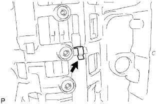 |
| 10. УСТАНОВИТЕ ФЛАНЕЦ КОРОННОЙ ШЕСТЕРНИ ЗАДНЕЙ ПЛАНЕТАРНОЙ ПЕРЕДАЧИ В СБОРЕ |
Установите кольцо упорного подшипника, упорный игольчатый роликовый подшипник, кольцо упорного подшипника и фланец коронной шестерни планетарной передачи на промежуточный вал.
| Параметр / Устройство | Внутри | Снаружи |
| Заднее кольцо H | 32,2-32,4 мм (1,27-1,28 дюйма) | 48,7-49,0 мм (1,92-1,93 дюйма) |
| Подшипник H | 32,2-32,3 мм (1,268-1,272 дюйма) | 49,0-49,2 мм (1,93-1,94 дюйма) |
| Переднее кольцо H | 33,4-33,6 мм (1,31-1,32 дюйма) | 48,7-49,0 мм (1,92-1,93 дюйма) |
| *1 | Заднее кольцо H |
| *2 | Переднее кольцо H |
| 11. УСТАНОВИТЕ МУФТУ СВОБОДНОГО ХОДА № 3 В СБОРЕ |
 |
Установите муфту свободного хода и внутреннее кольцо муфты свободного хода на промежуточный вал.
| 12. УСТАНОВИТЕ ПРОМЕЖУТОЧНЫЙ ВАЛ |
 |
Установите промежуточный вал вместе с муфтой свободного хода № 3 в сборе в картер.
| 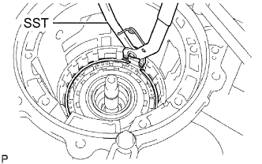 |
С помощью SST установите пружинное стопорное кольцо.
| 13. УСТАНОВИТЕ ЦЕНТРАЛЬНУЮ ПЛАНЕТАРНУЮ ПЕРЕДАЧУ В СБОРЕ |
 |
Установите солнечную шестерню планетарной передачи и центральную планетарную передачу в картер.
Смажьте кольцо упорного подшипника техническим вазелином и установите его на шестерню центральной планетарной передачи.
| Параметр / Устройство | Внутри | Снаружи |
| Кольцо G | 53,8-54,0 мм (2,12-2,13 дюйма) | 73,7-74,0 мм (2,90-2,91 дюйма) |
| 14. УСТАНОВИТЕ ПОРШЕНЬ ТОРМОЗНОГО ЦИЛИНДРА № 2 |
 |
Покройте 2 новых кольцевых уплотнения трансмиссионной жидкостью и установите их на поршень тормозного цилиндра.
| *1 | Новое кольцевое уплотнение |
Обеими руками вставьте поршень тормозного цилиндра в тормозной цилиндр.
Установите поршень тормозного цилиндра № 2 в картер.
| 15. УСТАНОВИТЕ ТОРМОЗНОЙ ДИСК № 2 |
Установите стяжную пружину поршня тормозного цилиндра.
Установите 3 пластины, 3 диска и фланец.
| *1 | Пластина |
| *2 | Диск |
| *3 | Фланец |
Используя SST и пресс, сожмите стяжную пружину и установите пружинное стопорное кольцо тормоза № 2.
| 16. УСТАНОВИТЕ ПОРШЕНЬ ТОРМОЗНОГО ЦИЛИНДРА № 1 |
 |
Покройте 2 новых кольцевых уплотнения трансмиссионной жидкостью и установите их на поршень тормозного цилиндра.
| *1 | Новое кольцевое уплотнение |
Обеими руками вставьте поршень тормозного цилиндра в тормозной цилиндр.
| 17. УСТАНОВИТЕ СТЯЖНУЮ ПРУЖИНУ ПОРШНЯ ТОРМОЗНОГО ЦИЛИНДРА В СБОРЕ |
 |
Установите поршень тормозного цилиндра № 1 вместе с тормозным цилиндром № 1 и стяжной пружиной поршня тормозного цилиндра в картер трансмиссии.
| 18. УСТАНОВИТЕ СТОПОРНОЕ КОЛЬЦО СТЯЖНОЙ ПРУЖИНЫ ПОРШНЯ ТОРМОЗНОГО ЦИЛИНДРА |
Используя SST и пресс, сожмите стяжную пружину и установите пружинное стопорное кольцо стяжной пружины поршня тормозного цилиндра.
| 19. ВЫБЕРИТЕ ФЛАНЕЦ ТОРМОЗА № 1 |
Используя комплект плоских щупов, измерьте расстояние между пружинным стопорным кольцом и фланцем.
| Метка | Толщина |
| 0 | 1,95-2,05 мм (0,0768-0,0807 дюйма) |
| 1 | 2,15-2,25 мм (0,0846-0,0886 дюйма) |
| 2 | 2,35-2,45 мм (0,0925-0,0965 дюйма) |
| 3 | 2,55-2,65 мм (0,100-0,104 дюйма) |
| 20. УСТАНОВИТЕ ТОРМОЗНОЙ ДИСК № 1 |
Установите 3 пластины, 3 диска и фланец.
| *1 | Пластина |
| *2 | Диск |
| *3 | Фланец |
| 21. УСТАНОВИТЕ ЦЕНТРАЛЬНУЮ КОРОННУЮ ШЕСТЕРНЮ ПЛАНЕТАРНОЙ ПЕРЕДАЧИ |
 |
Установите коронную шестерню центральной планетарной передачи и фланец коронной шестерни передней планетарной передачи на коронную шестерню передней планетарной передачи.
 |
С помощью отвертки установите пружинное стопорное кольцо.
| 22. УСТАНОВИТЕ КОРОННУЮ ШЕСТЕРНЮ ПЕРЕДНЕЙ ПЛАНЕТАРНОЙ ПЕРЕДАЧИ |
 |
Установите упорный игольчатый роликовый подшипник и коронную шестерню передней планетарной передачи в картер.
| Параметр / Устройство | Внутри | Снаружи |
| Подшипник G | 55,8-56,0 мм (2,197-2,204 дюйма) | 76,1-76,4 мм (2,996-3,008 дюйма) |
| 23. УСТАНОВИТЕ ПЕРЕДНЮЮ ПЛАНЕТАРНУЮ ПЕРЕДАЧУ В СБОРЕ |
Установите упорную шайбу и упорный игольчатый роликовый подшипник.
Смажьте кольцо упорного подшипника № 5 техническим вазелином и установите его на коронную шестерню передней планетарной передачи.
| Параметр / Устройство | Внутри | Снаружи |
| Подшипник F | 43,4-43,6 мм (1,71-1,72 дюйма) | 58,0-58,4 мм (2,28-2,30 дюйма) |
| Кольцо F | 38,0-38,2 мм (1,496-1,504 дюйма) | 56,5-57,0 мм (2,22-2,24 дюйма) |
| *1 | Подшипник F |
| *2 | Кольцо F |
 |
Установите переднюю планетарную передачу в сборе и внутреннее кольцо муфты свободного хода в картер.
| 24. УСТАНОВИТЕ ПОРШЕНЬ ТОРМОЗНОГО ЦИЛИНДРА 2-Й ПЕРЕДАЧИ |
 |
Покройте 2 новых кольцевых уплотнения трансмиссионной жидкостью и установите их на поршень тормозного цилиндра 2-й передачи.
| *1 | Новое кольцевое уплотнение |
Обеими руками вдавите поршень тормозного цилиндра 2-й передачи в тормозной цилиндр 2-й передачи.
Установите стяжную пружину в тормозной цилиндр 2-й передачи.
Используя SST и пресс, сожмите стяжную пружину и установите пружинное стопорное кольцо.
| 25. УСТАНОВИТЕ ТОРМОЗНОЙ ЦИЛИНДР 2-Й ПЕРЕДАЧИ |
 |
Установите тормозной цилиндр 2-й передачи в картер.
| 26. УСТАНОВИТЕ МУФТУ СВОБОДНОГО ХОДА В СБОРЕ |
 |
Установите в картер упорную шайбу и муфту свободного хода.
| 27. УСТАНОВИТЕ СТОПОРНОЕ КОЛЬЦО ОТВЕРСТИЯ ПОРШНЯ ТОРМОЗНОГО ЦИЛИНДРА 2-Й ПЕРЕДАЧИ |
С помощью SST установите пружинное стопорное кольцо.
| 28. УСТАНОВИТЕ ТОРМОЗНОЙ ДИСК № 3 |
 |
Установите в картер пружинящий диск, 4 пластины, 4 диска и фланец.
| *1 | Пружинящий диск |
| *2 | Пластина |
| *3 | Диск |
| *4 | Фланец |
| 29. УСТАНОВИТЕ ПРУЖИННОЕ СТОПОРНОЕ КОЛЬЦО ТОРМОЗА № 3 |
 |
С помощью отвертки установите пружинное стопорное кольцо.
| 30. УСТАНОВИТЕ ПОРШЕНЬ МУФТЫ ПРЯМОЙ ПЕРЕДАЧИ В СБОРЕ |
 |
Покройте 2 новых кольцевых уплотнения трансмиссионной жидкостью и установите их на поршень муфты прямой передачи.
| *1 | Новое кольцевое уплотнение |
 |
Установите стяжную пружину муфты прямой передачи и компенсатор муфты № 2 на поршень муфты прямой передачи.
Обеими руками вставьте поршень муфты прямой передачи в барабан муфты.
 |
Установите SST на поршень муфты прямой передачи и сожмите стяжную пружину прессом.
С помощью съемника стопорных колец установите пружинное стопорное кольцо.
 |
Расположите зазор разреза пружинного стопорного кольца, как показано на рисунке.
| *1 | Стопор |
| 31. УСТАНОВИТЕ ПОРШЕНЬ МУФТЫ ЗАДНЕГО ХОДА В СБОРЕ |
 |
Покройте новое кольцевое уплотнение трансмиссионной жидкостью и установите его в барабан муфты.
| *1 | Новое кольцевое уплотнение |
Покройте новое кольцевое уплотнение трансмиссионной жидкостью и установите его на поршень муфты заднего хода.
| *1 | Новое кольцевое уплотнение |
 |
Обеими руками вдавите барабан муфты в поршень муфты заднего хода.
| 32. УСТАНОВИТЕ СТЯЖНУЮ ПРУЖИНУ МУФТЫ ЗАДНЕГО ХОДА В СБОРЕ |
 |
Покройте новое кольцевое уплотнение трансмиссионной жидкостью и установите его на поршень муфты заднего хода.
| *1 | Новое кольцевое уплотнение |
Установите стяжную пружину муфты заднего хода на поршень муфты заднего хода.
| 33. УСТАНОВИТЕ КОМПЕНСАТОР МУФТЫ № 3 |
 |
Установите SST на компенсатор муфты № 3 и сожмите компенсатор муфты прессом.
С помощью съемника стопорных колец установите пружинное стопорное кольцо.
Расположите зазор разреза пружинного стопорного кольца, как показано на рисунке.
| 34. УСТАНОВИТЕ ДИСК МУФТЫ ПРЯМОЙ ПЕРЕДАЧИ |
 |
Для моделей с 1GR-FE:
Установите 5 пластин, 5 дисков и фланец муфты заднего хода на барабан муфты.
| *1 | Пластина |
| *2 | Диск |
| *3 | Фланец |
 |
Для моделей с 1KD-FTV:
Установите 6 пластин, 6 дисков и фланец муфты заднего хода на барабан муфты.
| *1 | Пластина |
| *2 | Диск |
| *3 | Фланец |
С помощью отвертки установите пружинное стопорное кольцо в барабан муфты.
Подавая сжатый воздух (под давлением 392 кПа, 4,0 кгс/см2, 57 фунтов на кв. дюйм) в отверстие для масла, как показано на рисунке, с помощью индикатора часового типа измерьте расстояние перемещения (A) фланца муфты на противоположных сторонах диаметра.
| Метка | Толщина |
| 2 | 2,95-3,05 мм (0,116-0,120 дюйма) |
| 3 | 3,05-3,15 мм (0,120-0,124 дюйма) |
| 4 | 3,15-3,25 мм (0,124-0,128 дюйма) |
| 5 | 3,25-3,35 мм (0,128-0,132 дюйма) |
| 6 | 3,35-3,45 мм (0,132-0,136 дюйма) |
| 7 | 3,45-3,55 мм (0,136-0,140 дюйма) |
| 8 | 3,55-3,65 мм (0,140-0,144 дюйма) |
| 9 | 3,65-3,75 мм (0,144-0,148 дюйма) |
| А | 3,75 - 3,85 мм (0,148 - 0,152 дюйма) |
Временно снимите пружинное стопорное кольцо, замените фланец на выбранный и снова установите пружинное стопорное кольцо.
| 35. ВЫБЕРИТЕ ФЛАНЕЦ МУФТЫ ЗАДНЕГО ХОДА |
 |
С помощью отвертки установите пружинное стопорное кольцо в барабан муфты.
 |
Установите 2 фланца, 5 дисков, 4 пластины, пружинящий диск и реактивную втулку муфты заднего хода в барабан муфты.
| *1 | Фланец |
| *2 | Диск |
| *3 | Пластина |
| *4 | Пружинящий диск |
С помощью отвертки установите пружинное стопорное кольцо отверстия.
Подавая сжатый воздух (под давлением 392 кПа, 4,0 кгс/см2, 57 фунтов на кв. дюйм) в отверстие для масла, как показано на рисунке, с помощью индикатора часового типа измерьте расстояние перемещения (A - B) верхней поверхности поршня муфты заднего хода (A) и пружинящего диска на противоположных сторонах диаметра (B). Затем выберите из таблицы фланец, толщина которого обеспечит попадание измеренной величины в номинальный диапазон.
| Метка | Толщина |
| 0 | 2,75-2,85 мм (0,108-0,112 дюйма) |
| 1 | 2,85-2,95 мм (0,112-0,116 дюйма) |
| 2 | 2,95-3,05 мм (0,116-0,120 дюйма) |
| 3 | 3,05-3,15 мм (0,120-0,124 дюйма) |
| 4 | 3,15-3,25 мм (0,124-0,128 дюйма) |
| 5 | 3,25-3,35 мм (0,128-0,132 дюйма) |
| 6 | 3,35-3,45 мм (0,132-0,136 дюйма) |
| 7 | 3,45-3,55 мм (0,136-0,140 дюйма) |
| 8 | 3,55-3,65 мм (0,140-0,144 дюйма) |
| 9 | 3,65-3,75 мм (0,144-0,148 дюйма) |
| А | 3,75 - 3,85 мм (0,148 - 0,152 дюйма) |
 |
Извлеките пружинное стопорное кольцо, реактивную втулку муфты заднего хода и комплект задних ведомых дисков сцепления из барабана муфты.
| 36. СНИМИТЕ РЕАКТИВНУЮ ВТУЛКУ МУФТЫ ЗАДНЕГО ХОДА |
С помощью отвертки извлеките пружинное стопорное кольцо из барабана муфты.
|
Снимите реактивную втулку муфты заднего хода, пружинящий диск сцепления, фланец муфты заднего хода, 5 дисков муфты заднего хода и 4 пластины сцепления со ступицы муфты заднего хода.
| 37. УСТАНОВИТЕ МАСЛОУПЛОТНИТЕЛЬНОЕ КОЛЬЦО ПЕРВИЧНОГО ВАЛА |
 |
Покройте 3 новых маслоуплотнительных кольца трансмиссионной жидкостью.
Сожмите концы 3 маслоуплотнительных колец вместе и установите их в канавку вала стартера.
| 38. УСТАНОВИТЕ ПОРШЕНЬ МУФТЫ ПЕРЕДНЕГО ХОДА |
Покройте 2 новых кольцевых уплотнения трансмиссионной жидкостью и установите их на поршень муфты переднего хода.
| *1 | Новое кольцевое уплотнение |
Установите поршень муфты переднего хода на первичный вал.
| 39. УСТАНОВИТЕ КОМПЕНСАТОР МУФТЫ № 1 |
Покройте новое кольцевое уплотнение трансмиссионной жидкостью и установите его на компенсатор муфты.
| *1 | Новое кольцевое уплотнение |
 |
Установите стяжную пружину муфты переднего хода и компенсатор муфты.
 |
Установите SST на компенсатор муфты № 1 и сожмите стяжную пружину прессом.
С помощью съемника стопорных колец установите пружинное стопорное кольцо.
Расположите зазор разреза пружинного стопорного кольца, как показано на рисунке.
| 40. УСТАНОВИТЕ ДИСК МНОГОДИСКОВОЙ МУФТЫ ПЕРЕДНЕГО ХОДА |
Для моделей с 1GR-FE:
Установите 2 фланца, 6 дисков и 5 пластин на первичный вал в сборе.
| *1 | Фланец |
| *2 | Диск |
| *3 | Пластина |
 |
Для моделей с 1KD-FTV:
Установите 2 фланца, 7 дисков и 6 пластин на первичный вал в сборе.
| *1 | Фланец |
| *2 | Диск |
| *3 | Пластина |
 |
С помощью отвертки временно установите пружинное стопорное кольцо.
Подавая сжатый воздух (под давлением 196 кПа, 2,0 кгс/см2, 28 фунтов на кв. дюйм) в отверстие для масла, как показано на рисунке, с помощью индикатора часового типа измерьте расстояние перемещения (A) фланца муфты на противоположных сторонах диаметра.
| Метка | Толщина |
| 0 | 2,95-3,05 мм (0,116-0,120 дюйма) |
| 1 | 3,05-3,15 мм (0,120-0,124 дюйма) |
| 2 | 3,15-3,25 мм (0,124-0,128 дюйма) |
| 3 | 3,25-3,35 мм (0,128-0,132 дюйма) |
| 4 | 3,35-3,45 мм (0,132-0,136 дюйма) |
| 5 | 3,45-3,55 мм (0,136-0,140 дюйма) |
| 6 | 3,55-3,65 мм (0,140-0,144 дюйма) |
| 7 | 3,65-3,75 мм (0,144-0,148 дюйма) |
| 8 | 3,75-3,85 мм (0,148-0,152 дюйма) |
| 9 | 3,85-3,95 мм (0,148-0,152 дюйма) |
| А | 3,95-4,05 мм (0,152-0,159 дюйма) |
Временно снимите пружинное стопорное кольцо, замените фланец на выбранный и снова установите пружинное стопорное кольцо.
| 41. УСТАНОВИТЕ ПЕРВИЧНЫЙ ВАЛ В СБОРЕ |
 |
Установите первичный вал в барабан муфты.
 |
Установите упорный игольчатый роликовый подшипник в барабан муфты.
| Параметр / Устройство | Внутри | Снаружи |
| Подшипник C | 21,4-21,6 мм (0,841-0,850 дюйма) | 40,8-41,0 мм (1,606-1,614 дюйма) |
| 42. УСТАНОВИТЕ СТУПИЦУ МНОГОДИСКОВОЙ МУФТЫ |
Смажьте 2 кольца упорных подшипников техническим вазелином и установите их на ступицу многодисковой муфты.
| Параметр / Устройство | Внутри | Снаружи |
| Кольцо № 3 | 22,7-22,9 мм (0,892-0,902 дюйма) | 60,0-60,4 мм (2,36-2,38 дюйма) |
| Кольцо D | 33,3-33,5 мм (1,31-1,32 дюйма) | 56,3-56,6 мм (2,22-2,23 дюйма) |
| *1 | Кольцо № 3 |
| *2 | Кольцо D |
 |
Установите ступицу многодисковой муфты на барабан муфты.
| 43. УСТАНОВИТЕ СТУПИЦУ МУФТЫ ПЕРЕДНЕГО ХОДА В СБОРЕ |
Покройте 2 упорных игольчатых роликовых подшипника техническим вазелином и установите их на ступицу муфты переднего хода.
| Параметр / Устройство | Внутри | Снаружи |
| Подшипник D | 38,5-38,7 мм (1,515-1,524 дюйма) | 56,5-57,0 мм (2,22-2,24 дюйма) |
| Подшипник E | 42,6-42,8 мм (1,68-1,69 дюйма) | 60,8-61,1 мм (2,39-2,41 дюйма) |
| *1 | Подшипник D |
| *2 | Подшипник E |
| 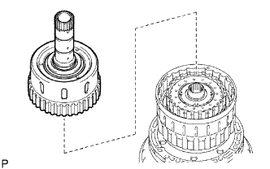 |
Установите ступицу муфты переднего хода на барабан муфты.
| 44. УСТАНОВИТЕ ДИСК ЗАДНЕЙ МУФТЫ |
Установите 5 дисков, 4 пластины, фланец муфты заднего хода и пружинящий диск сцепления в ступицу муфты заднего хода.
| *1 | Диск |
| *2 | Пластина |
| *3 | Фланец |
| *4 | Пружинящий диск |
| 45. УСТАНОВИТЕ РЕАКТИВНУЮ ВТУЛКУ МУФТЫ ЗАДНЕГО ХОДА |
| 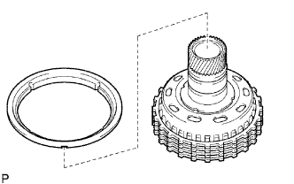 |
Установите реактивную втулку муфты заднего хода в ступицу муфты заднего хода.
| 46. УСТАНОВИТЕ СТУПИЦУ МУФТЫ ЗАДНЕГО ХОДА В СБОРЕ |
| 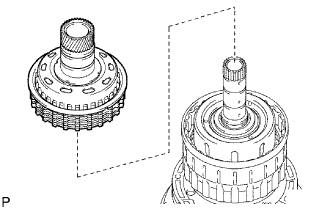 |
Установите ступицу муфты заднего хода в барабан муфты.
| 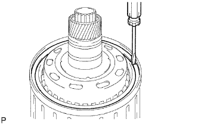 |
С помощью отвертки установите пружинное стопорное кольцо на барабан муфты и первичный вал.
| 47. УСТАНОВИТЕ МУФТУ СВОБОДНОГО ХОДА № 2 В СБОРЕ |
 |
Смажьте упорную шайбу барабана муфты № 2 техническим вазелином и установите ее на барабан муфты.
Установите муфту свободного хода в барабан муфты.
| 48. УСТАНОВИТЕ БАРАБАН МУФТЫ И ПЕРВИЧНЫЙ ВАЛ В СБОРЕ |
Покройте 2 упорных игольчатых роликовых подшипника и упорную шайбу барабана муфты техническим вазелином и установите их на барабан муфты и первичный вал в сборе.
| Параметр / Устройство | Внутри | Снаружи |
| Подшипник A | 72,0-72,3 мм (2,83-2,85 дюйма) | 85,3-85,6 мм (3,36-3,37 дюйма) |
| Подшипник B | 34,7-34,9 мм (1,366-1,374 дюйма) | 51,6-51,9 мм (2,03-2,04 дюйма) |
| *1 | Подшипник A |
| *2 | Подшипник B |
Установите барабан муфты и первичный вал в сборе в картер трансмиссии.
| 49. УСТАНОВИТЕ МАСЛЯНЫЙ НАСОС В СБОРЕ |
Покройте кольца упорных подшипников № 1 и № 2 техническим вазелином и установите их на передний масляный насос.
| Параметр / Устройство | Внутри | Снаружи |
| Кольцо A | 74,3-74,6 мм (2,93-2,94 дюйма) | 87,4-87,7 мм (3,44-3,45 дюйма) |
| Кольцо B | 37,0-37,3 мм (1,46-1,47 дюйма) | 52,1-52,3 мм (2,05-2,06 дюйма) |
| *1 | Кольцо A |
| *2 | Кольцо B |
 |
Покройте новое кольцевое уплотнение трансмиссионной жидкостью и установите его на масляный насос в сборе.
| *1 | Новое кольцевое уплотнение |
Задвиньте масляный насос на первичный вал, совместите болтовые отверстия масляного насоса в сборе с болтовыми отверстиями картера трансмиссии и закрепите масляный насос.
Удерживая первичный вал, слегка надавите на корпус масляного насоса, чтобы вставить маслоуплотнительные кольца в барабан муфты прямой передачи повышающей передачи.
 |
Вверните 10 болтов.
| 50. УСТАНОВИТЕ САЛЬНИК ВАЛА РЫЧАГА КЛАПАНА С РУЧНЫМ УПРАВЛЕНИЕМ |
С помощью SST и молотка запрессуйте 2 новых сальника.
Покройте кромки сальников универсальной консистентной смазкой.
| 51. ПРОВЕРЬТЕ РАБОТУ КАЖДОГО ПОРШНЯ |
 |
Подавая сжатый воздух в отверстия для заливки масла, показанные на рисунке, проверьте наличие звука срабатывания.
| 52. УСТАНОВИТЕ РЫЧАГ КЛАПАНА С РУЧНЫМ УПРАВЛЕНИЕМ В СБОРЕ |
Установите новую распорную втулку на рычаг клапан с ручным управлением.
| *1 | Распорная втулка |
| *2 | Рычаг клапана с ручным управлением |
Протолкните вал рычага клапана с ручным управлением через картер трансмиссии и установите рычаг клапана с ручным управлением на вал рычага клапана с ручным управлением.
С помощью молотка вбейте новый пружинный штифт.
 |
Совместите углубление на рычаге клапана с ручным управлением с отверстием распорной втулки и скрепите их вместе с помощью бородка.
Убедитесь, что вал вращается плавно.
| 53. УСТАНОВИТЕ ВАЛ ЗАПОРНОГО ШТИФТА СТОЯНОЧНОГО ТОРМОЗА |
 |
Установите разрезное уплотнение на вал.
| *1 | E-образное кольцо |
| *2 | Запорный штифт стояночного тормоза |
| *3 | Пружина |
Установите запорный штифт стояночного тормоза, вал и пружину.
| 54. УСТАНОВИТЕ ЗАПОРНЫЙ СТЕРЖЕНЬ СТОЯНОЧНОГО ТОРМОЗА В СБОРЕ |
 |
Подсоедините запорный стержень стояночного тормоза к рычагу клапана с ручным управлением, чтобы закрепить его.
| 55. УСТАНОВИТЕ КРОНШТЕЙН ЗАПОРНОГО ШТИФТА СТОЯНОЧНОГО ТОРМОЗА |
Закрепите кронштейн запорного штифта стояночного тормоза на картере трансмиссии 3 болтами.
 |
Сместите рычаг клапана с ручным управлением в положение P и убедитесь в том, что коронная шестерня планетарной передачи правильно заблокирована запорным штифтом.
| *1 | Рычаг клапана с ручным управлением |
| *2 | Коронная шестерня планетарной передачи |
| *3 | Запорный штифт стояночного тормоза |
| 56. УСТАНОВИТЕ КЛАПАН ГИДРОАККУМУЛЯТОРА C-1 |
Установите 2 пружины и клапан гидроаккумулятора в отверстие.
| Пружина | Длина в свободном состоянии Наружный диаметр | Цвет |
| Внутренняя C-1 | 30,40 мм (1,20 дюйма) 11,40 мм (0,449 дюйма) | Розовый |
| Наружная C-1 | 48,76 мм (1,92 дюйма) 16,60 мм (0,654 дюйма) | Светло-зеленый |
| 57. УСТАНОВИТЕ ПОРШЕНЬ ГИДРОАККУМУЛЯТОРА C-3 |
 |
Покройте 2 новых кольцевых уплотнения трансмиссионной жидкостью и установите их на поршень.
| *1 | Новое кольцевое уплотнение |
Установите 2 пружины и поршень гидроаккумулятора в отверстие.
| Пружина | Длина в свободном состоянии Наружный диаметр | Цвет |
| Внутренняя C-3 | 44,0 мм (1,73 дюйма) 14,0 мм (0,551 дюйма) | Желтый |
| Наружная C-3 | 73,35 мм (2,89 дюйма) 19,90 мм (0,784 дюйма) | Красный |
| 58. УСТАНОВИТЕ ПОРШЕНЬ ГИДРОАККУМУЛЯТОРА B-3 |
Покройте 2 новых кольцевых уплотнения трансмиссионной жидкостью и установите их на поршень.
| *1 | Новое кольцевое уплотнение |
Установите пружину и поршень гидроаккумулятора в отверстие.
| Пружина | Длина в свободном состоянии Наружный диаметр | Цвет |
| B-3 | 70,5 мм (2,78 дюйма) 19,7 мм (0,776 дюйма) | Вишневый |
| 59. УСТАНОВИТЕ ПОРШЕНЬ ГИДРОАККУМУЛЯТОРА C-2 |
Покройте 2 новых кольцевых уплотнения трансмиссионной жидкостью и установите их на поршень.
| *1 | Новое кольцевое уплотнение |
Установите пружину и поршень гидроаккумулятора в отверстие.
| Пружина | Длина в свободном состоянии Наружный диаметр | Цвет |
| C-2 | 62,0 мм (2,44 дюйма) 15,9 мм (0,626 дюйма) | Белый |
| 60. УСТАНОВИТЕ ПРОКЛАДКУ ТОРМОЗНОГО БАРАБАНА |
 |
Установите 3 прокладки тормозного барабана.
| 61. УСТАНОВИТЕ ПРОКЛАДКУ КАРТЕРА ТРАНСМИССИИ |
 |
Установите 3 прокладки картера трансмиссии.
| 62. УСТАНОВИТЕ КОРПУС ЗАПОРНОГО ШАРИКА |
 |
Установите пружину и корпус запорного шарика.
| *1 | Пружина |
| *2 | Корпус запорного шарика |
| 63. УСТАНОВИТЕ КОРПУС КЛАПАНОВ ТРАНСМИССИИ В СБОРЕ |
 |
Вставьте штифт клапана с ручным управлением в отверстие рычага клапана с ручным управлением.
| *1 | Штырь |
 |
Установите корпус клапанов трансмиссии в сборе и закрепите его 19 болтами.
Установите пружину фиксатора и крышку пружины фиксатора, закрепив их болтом.
| 64. УСТАНОВИТЕ ЖГУТ ЭЛЕКТРОПРОВОДКИ ТРАНСМИССИИ |
| 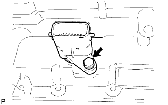 |
Покройте новое кольцевое уплотнение трансмиссионной жидкостью и установите его на разъем жгута электропроводки трансмиссии.
Установите жгут электропроводки трансмиссии.
Заверните болт.
 |
Подсоедините 7 разъемов электромагнитных клапанов.
Подсоедините 2 датчика температуры ATF с помощью 2 зажимов и 2 болтов.
| *1 | Датчик температуры № 1 |
| *2 | Датчик температуры № 2 |
| Жгут проводов | Цвет |
| Для датчика температуры № 1 | Оранжевый |
| Для датчика температуры № 2 | Синий |
| 65. УСТАНОВИТЕ СЕТЧАТЫЙ МАСЛЯНЫЙ ФИЛЬТР КОРПУСА КЛАПАНОВ В СБОРЕ |
| 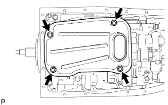 |
Покройте новое кольцевое уплотнение трансмиссионной жидкостью и установите его в сетчатый масляный фильтр корпуса клапанов в сборе.
Установите сетчатый масляный фильтр и закрепите его 4 болтами.
| 66. УСТАНОВИТЕ МАГНИТ МАСЛЯНОГО ФИЛЬТРА ТРАНСМИССИИ |
Установите 4 магнита.
| 67. УСТАНОВИТЕ МАСЛЯНЫЙ ПОДДОН АВТОМАТИЧЕСКОЙ ТРАНСМИССИИ В СБОРЕ |
Установите новую прокладку в масляный поддон.
Установите масляный поддон и закрепите его 20 болтами.
Установите пробку сливного отверстия.
| 68. УСТАНОВИТЕ МАСЛОПРИЕМНИК ПЕРЕХОДНИКА ЗАДНЕГО КАРТЕРА ТРАНСМИССИИ |
 |
Установите маслоприемник переходника картера трансмиссии на задний переходник раздаточной коробки.
С помощью съемника стопорных колец установите пружинное стопорное кольцо.
| 69. УСТАНОВИТЕ ЗАДНИЙ САЛЬНИК ПЕРЕХОДНИКА КАРТЕРА ТРАНСМИССИИ |
Покройте кромку нового сальника трансмиссионной жидкостью.
С помощью SST и молотка установите сальник.
| 70. УСТАНОВИТЕ ЗАДНИЙ ПЕРЕХОДНИК РАЗДАТОЧНОЙ КОРОБКИ |
Очистите резьбу болтов и картера.
 |
Нанесите герметик или аналогичный материал на переходник картера трансмиссии и 8 болтов.
| *1 | Герметик |
Установите переходник картера трансмиссии и закрепите его 8 болтами.
| 71. УСТАНОВИТЕ КОЖУХ АВТОМАТИЧЕСКОЙ ТРАНСМИССИИ |
Очистите резьбу болтов и картера не оставляющим осадка растворителем.
Установите кожух трансмиссии и закрепите его 10 болтами.
| *A | Для моделей с 1GR-FE: |
| *B | Для моделей с 1KD-FTV: |
| 72. УСТАНОВИТЕ ТРУБКУ САПУНА АВТОМАТИЧЕСКОЙ ТРАНСМИССИИ |
| 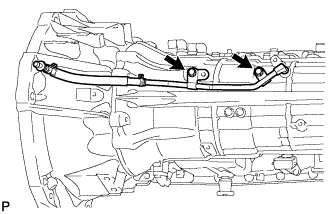 |
Покройте новое кольцевое уплотнение ATF и установите его на трубку сапуна.
Установите трубку сапуна и закрепите ее 2 болтами.
| 73. УСТАНОВИТЕ ДАТЧИК ЧАСТОТЫ ВРАЩЕНИЯ |
 |
Покройте 2 новых кольцевых уплотнения трансмиссионной жидкостью и установите по одному на каждый датчик частоты вращения.
Установите 2 датчика частоты вращения.
Вверните 2 болта.
| 74. УСТАНОВИТЕ ШТУЦЕР ПАТРУБКА МАСЛЯНОГО РАДИАТОРА |
 |
Покройте новое кольцевое уплотнение трансмиссионной жидкостью и установите его в каждый штуцер патрубка масляного радиатора.
Установите штуцер патрубка масляного радиатора.
| *A | Для моделей с подогревателем: |
| *B | Для моделей без подогревателя: |
| 75. УСТАНОВИТЕ ДАТЧИК ПОЛОЖЕНИЯ ПАРКИНГА / НЕЙТРАЛИ В СБОРЕ |
 |
Установите датчик положения паркинга/нейтрали на вал рычага клапана с ручным управлением и, не затягивая, закрепите регулировочный болт.
Установите новую стопорную шайбу и гайку.
Временно установите рычаг приводного вала.
 |
Поверните рычаг приводного вала до упора по часовой стрелке, а затем поверните его на 2 прорези против часовой стрелки для установки в положение N.
Снимите рычаг приводного вала.
 |
Совместите базовую линию нейтрали с канавкой датчика и затяните регулировочный болт.
| *1 | Базовая линия нейтрали |
| *2 | Канавка |
 |
С помощью отвертки загните лепестки стопорной шайбы.
| 76. УСТАНОВИТЕ ЛЕВЫЙ РЫЧАГ ПРИВОДНОГО ВАЛА ТРАНСМИССИИ |
| 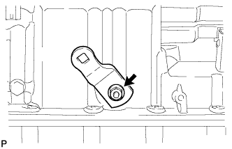 |
Установите рычаг приводного вала и закрепите его пружинной шайбой и гайкой.